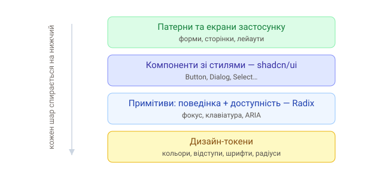

1. Що таке дизайн-система
Дизайн-система — це набір узгоджених правил і готових будівельних блоків для інтерфейсу: токени (кольори, відступи, шрифти), компоненти (кнопки, поля, діалоги) і патерни їх використання. Мета — щоб продукт виглядав і поводився однаково, а розробка була швидкою.

Кожен верхній шар спирається на нижчий: токени живлять примітиви, примітиви дають поведінку компонентам, а з компонентів збираються екрани.
2. Дизайн-токени
Токени — це названі значення дизайну в одному місці. Найзручніше зберігати їх як CSS-змінні (тему ми проходили в «Сучасному CSS»):
:root {
--color-primary: #4f46e5;
--radius: 8px;
--space-4: 1rem;
--font-sans: "Inter", sans-serif;
}3. Наш стек
У цьому розділі — три популярні інструменти, що доповнюють один одного:
- Radix — примітиви з поведінкою й доступністю, але без вигляду;
- shadcn/ui — готові стильні компоненти на базі Radix + Tailwind, які ти копіюєш у свій проєкт і володієш ними;
- Storybook — середовище для ізольованої розробки й документування компонентів.
Готові бібліотеки (MUI, Ant Design) дають усе й одразу, але їх важко глибоко кастомізувати. Зв'язка Radix + shadcn/ui — інший підхід: базова поведінка й доступність готові, а вигляд повністю твій.
4. Навіщо це знати
- швидша розробка узгодженого UI без «велосипедів»;
- доступність (a11y) з коробки — складна тема, яку примітиви беруть на себе;
- спільна мова з дизайнерами й рештою команди.